Dat Bike có khả năng cập nhật phần mềm từ xa, mang đến những tính năng và trải nghiệm mới hơn mỗi ngày.

Đại lý ủy quyền Dat Bike
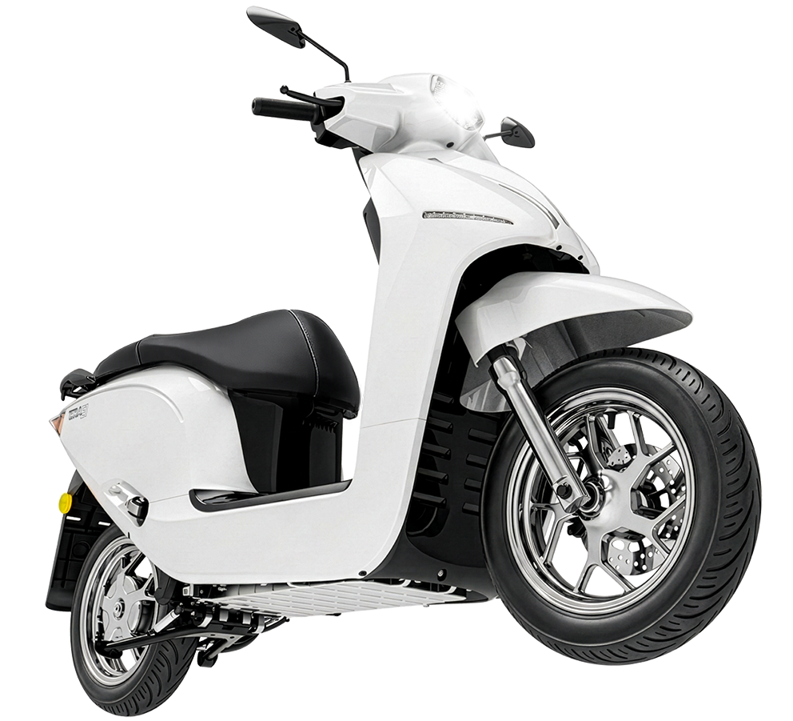
XE MÁY ĐIỆN DAT BIKE ERA
Đủ Thực lực
Cân Đời Thực
Cốp xe50L
Rộng rãi phù hợp mọi nhu cầu hằng ngày
200km/1 lần sạc
Sạc 1 lần, đi cả tuần
15 phútsạc, đi cả ngày
Sạc tích hợp trên xe. Nhanh gọn tiện lợi cho ngày dài
Tối ưu mọi trải nghiệm
Trọn vẹn từng chuyến đi
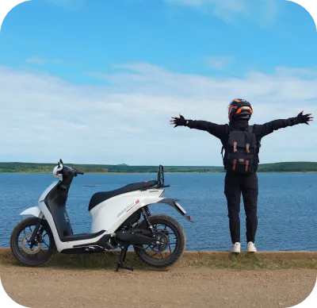
Sở hữu sức mạnh vượt trội hơn cả xe xăng, xóa tan định kiến xe điện là yếu hay chỉ đi được quãng đường ngắn. Dat Bike mang đến hiệu suất thực thụ để bạn hoàn toàn tự chủ trên mọi hành trình.
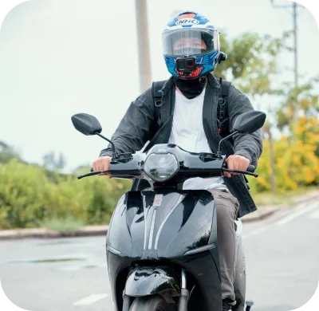
Tự Chủ Công Nghệ Lõi
Chúng tôi làm chủ hoàn toàn công nghệ pin và hệ thống quản lý pin thông minh giúp tối ưu hiệu suất đến mức cao nhất, mang đến chiếc xe điện bền bỉ với chi phí vận hành thấp.
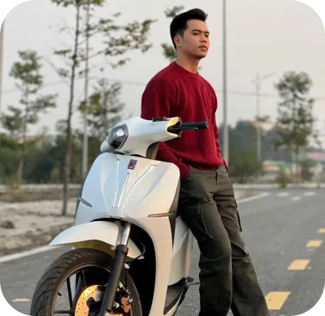
Cải Tiến Liên Tục
Mỗi ý kiến của bạn là động lực để chúng tôi nâng cấp sản phẩm mỗi ngày. Với Dat Bike, chúng tôi sẽ không ngừng cải tiến liên tục để những sản phẩm ngày càng hoàn thiện hơn theo thời gian.
Những con số biết nói
50+
Cửa hàng
2022: 3 cửa hàng
2025: hơn 40 cửa hàng
2026: Dự kiến 150+ cửa hàng
+
07
Mẫu xe ra mắt
- Weaver
- Weaver++
- Weaver 200
- Quantum
- Quantum S1
- Quantum S2
- Quantum S3
+
x3
Doanh số mỗi năm
Top 10 xe 2 bánh bán chạy nhất Việt Nam T3-T4/2026. (Theo Znews)
+
285
Kilomet
Quãng đường kỷ lục cho 01 lần sạc
25
Năm
Độ bền của Pin
50
Lít
Dung tích cốp xe to nhất thị trường
Làm chủ công nghệ cốt lõi
Tiên phong mở lối Công nghệ
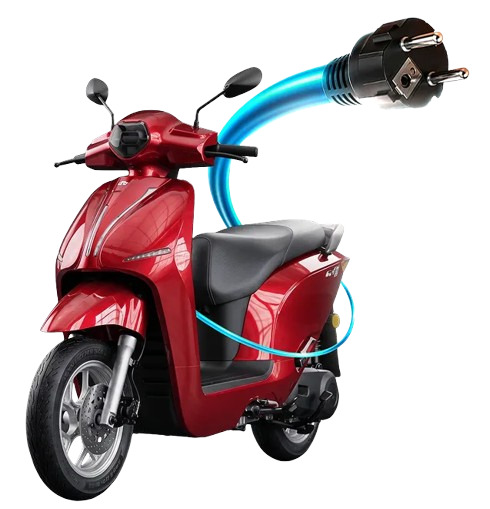
Giải Mã Công Nghệ
Integrated Charger
Đầu Tiên Trên Thế Giới
- Sạc tích hợp tiện lợi. (Thay vì phải mang theo bộ sạc cồng kềnh hay phụ thuộc trạm sạc ngoài, mọi thứ đã được tích hợp sẵn trong xe)
- Sạc mọi lúc mọi nơi. (Chỉ cần một ổ điện thông thường, bạn đã có thể sạc lại năng lượng cho xe như sạc pin một chiếc điện thoại)
- Sạc 15 phút, đi 30km.Chế độ sạc Boost giúp bạn thoải mái đi tiếp cả ngày dài.
Công nghệ
Pack Pin
Độc Quyền
Độc Quyền
Dat Bike tự nghiên cứu công nghệ pack pin nhằm tối ưu hóa hiệu suất, giúp xe đi xa kỷ lục và bền bỉ hơn gấp nhiều lần)
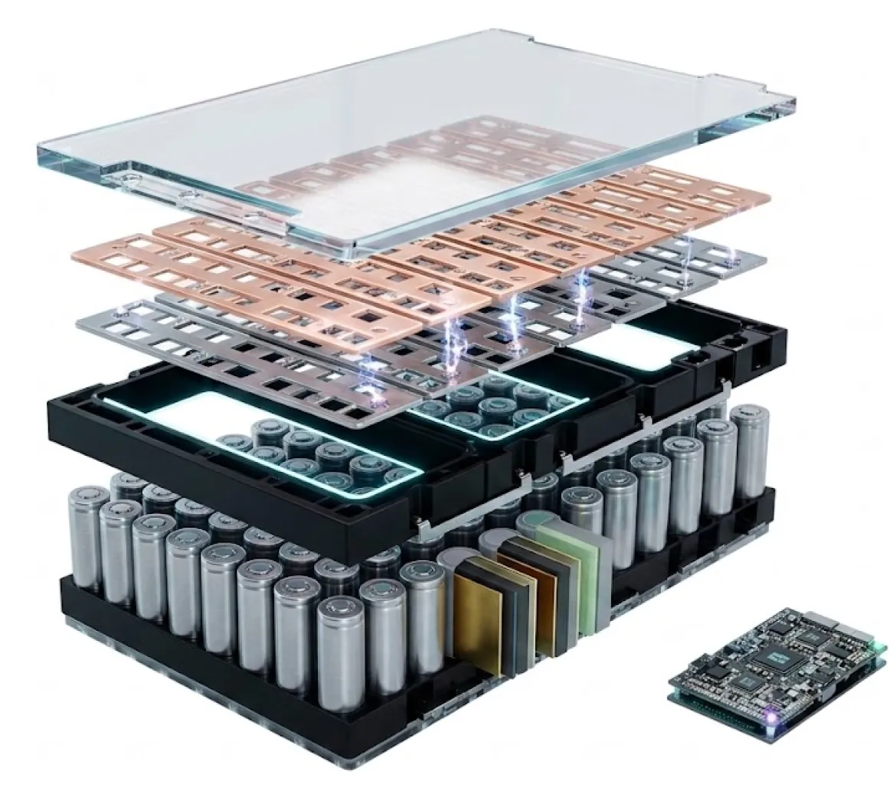
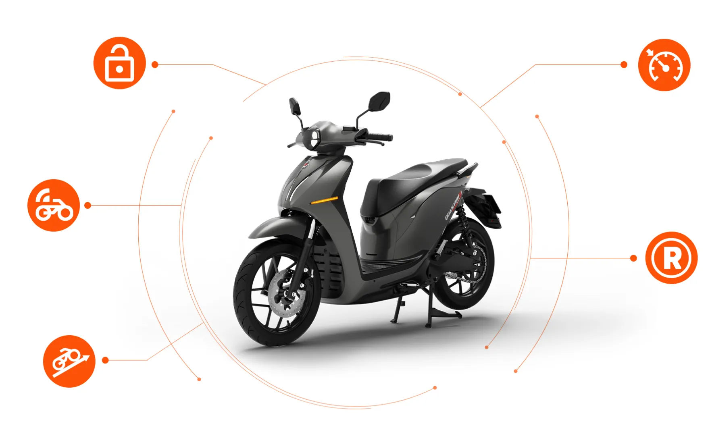
Tiện nghi
Trong từng
chuyến đi
chuyến đi
Từ tìm xe trong bãi, giữ ga tự động, khởi hành ngang dốc đến chống trộm và hỗ trợ dắt xe, mọi tính năng đều được thiết kế để việc sử dụng trở nên nhẹ nhàng, thoải mái và trọn vẹn hơn.
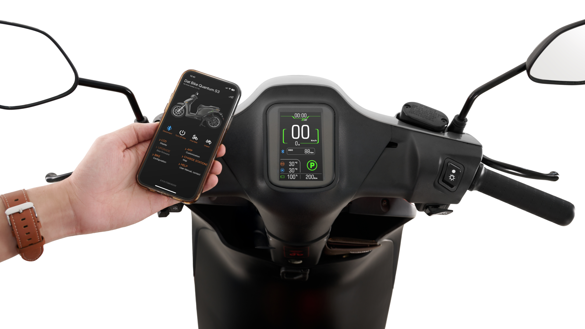
Khi Công Nghệ Là Nền Tảng Cho Trải Nghiệm Tự Do
Cập nhật tính năng mới qua App.
(Khác với xe xăng, Dat Bike có khả năng cập nhật phần mềm từ xa, mang đến những tính năng và trải nghiệm mới hơn mỗi ngày)
Làm chủ hành trình.
(Công nghệ từ Dat Bike giúp bạn hoàn toàn tự do tận hưởng chuyến đi mà không còn nỗi lo về kỹ thuật hay giới hạn hạ tầng)
Làm chủ hành trình.
Công nghệ từ Dat Bike giúp bạn tự do tận hưởng chuyến đi mà không còn nỗi lo về kỹ thuật hay giới hạn hạ tầng.
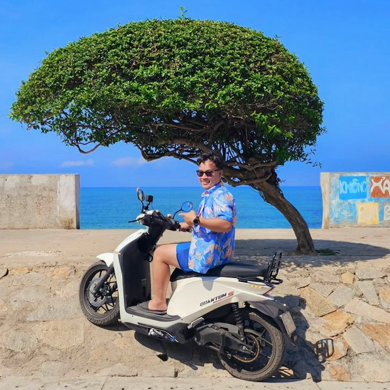
Khách hàng nói gì về
Dat Bike
Anh Công
dùng Quantum S1
“Mình chọn Quantum S1 vì cảm giác lái phấn khích, tăng tốc đã nhưng vẫn rất thực dụng. Cốp rộng, để chân thoải mái, Cruise Control nhàn khi đi xa. 5 tháng qua, mình đã cùng xe lên Đà Lạt, xuống Bình Thuận, ra Phú Quý và đi làm mỗi ngày.”
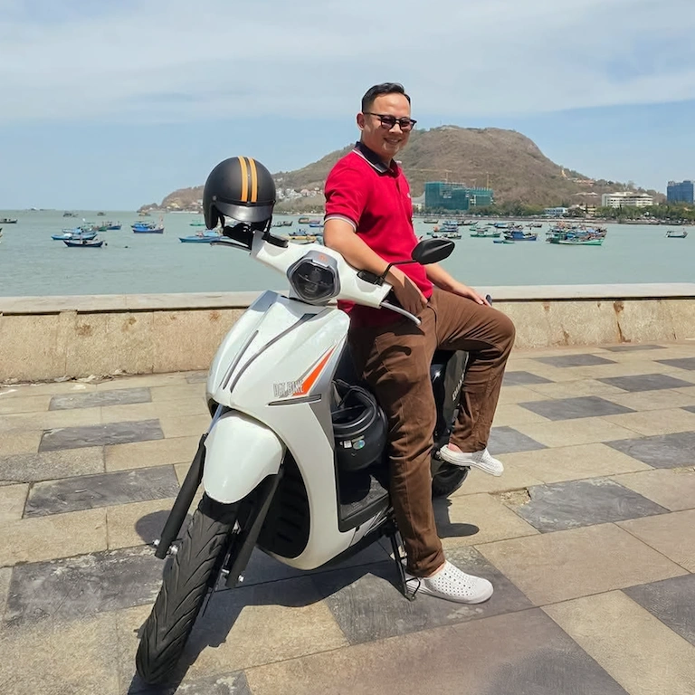
Khách hàng nói gì về
Dat Bike
Anh Vũ
dùng Quantum
“Lần đầu đi phượt xe điện từ TP.HCM đến Vũng Tàu, mình chạy 118km trong khoảng 3 tiếng mà chỉ hết 62% pin. Xe vẫn còn 38%, ước tính đi thêm khoảng 75km. Cruise Control cũng rất tiện khi cần giữ tốc độ ổn định trên đường dài.”
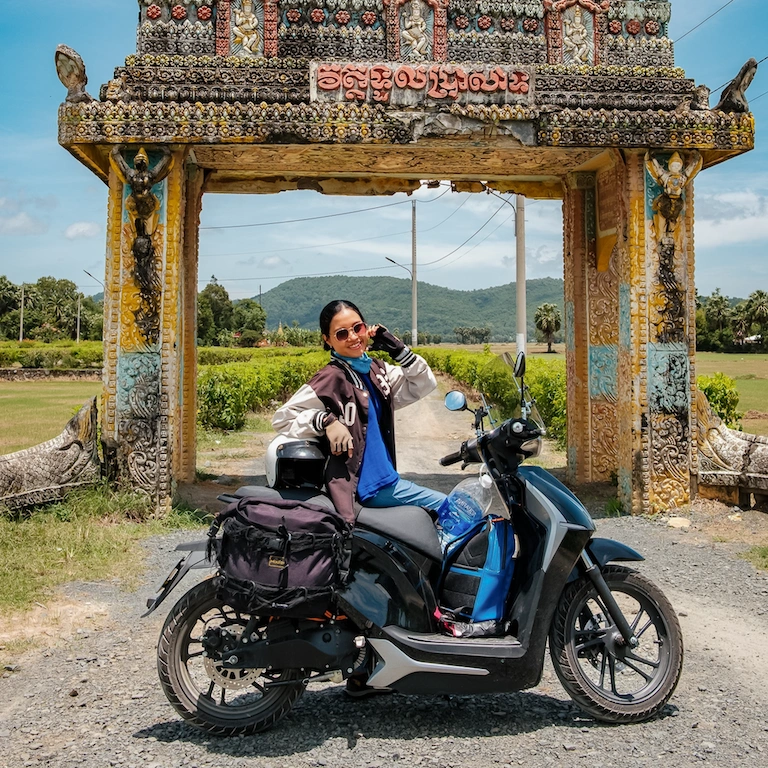
Khách hàng nói gì về
Dat Bike
Chị Vân
dùng Quantum
“Trước đây mình không nghĩ xe điện có thể đi xa như vậy. Từ khi chạy Dat Bike, việc đi làm, đi chơi hay du lịch ngắn ngày đều nhẹ nhàng hơn nhiều. Xe cho mình cảm giác tự do hơn trong từng hành trình, mà vẫn tiện cho cuộc sống hằng ngày.”
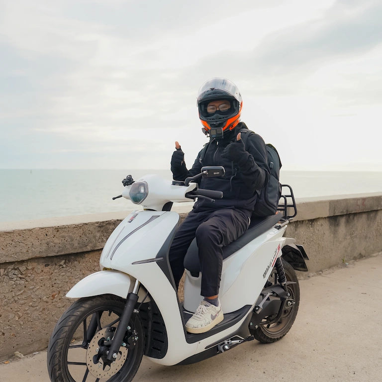
Khách hàng nói gì về
Dat Bike
Anh Tích
dùng Quantum S1
“Mình thường đi xe máy đường dài nên khá kỹ khi chọn xe. Sau khi chạy Dat Bike qua nhiều cung đường, kể cả dốc lên xuống, mình thấy xe rất hợp để đi tour lẫn đi hằng ngày.”
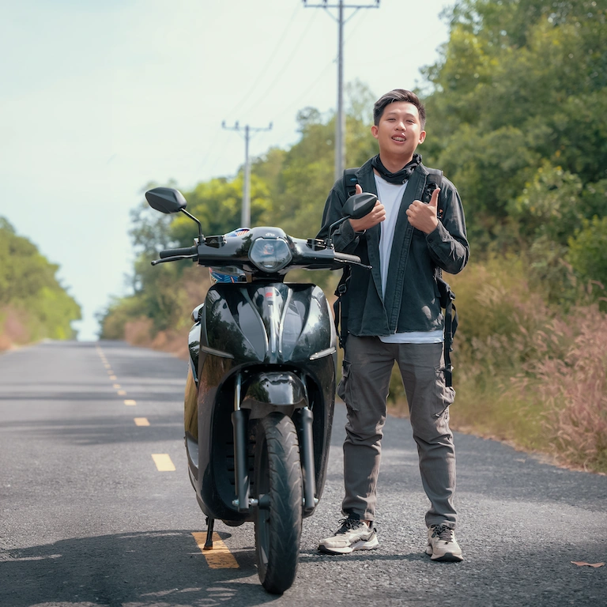
Khách hàng nói gì về
Dat Bike
Anh Đạt
dùng Quantum S1
“Mình thử chạy Quantum S1 từ Bình Chánh đi Cần Giờ rồi quay về trong ngày chỉ với một lần sạc. Tổng quãng đường 168km, về đến nhà xe vẫn còn 28% pin.”
Kiến Thức
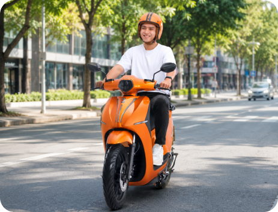
Xe điện có thật sự bảo vệ môi trường?
Một trong những quan điểm được đưa ra khá nhiều trong các thảo luận về xe điện
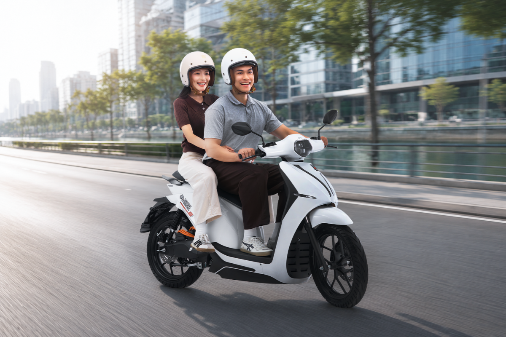
Tuổi thọ xe máy điện Dat Bike là bao lâu?
BMS là gì? Hệ thống quản lý pin BMS đóng vai trò như người gác cổng cho pin xe điện
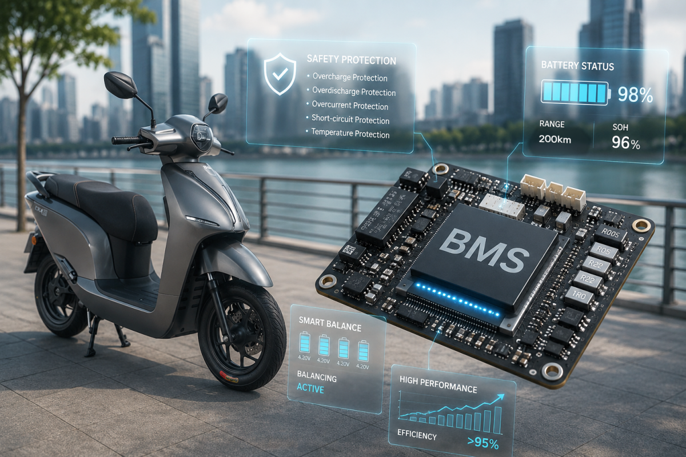
BMS là gì? Tại sao hệ thống quản lý pin BMS quan trọng với xe máy điện
BMS là gì? Hệ thống quản lý pin BMS đóng vai trò như người gác cổng cho pin xe điện
Tin tức
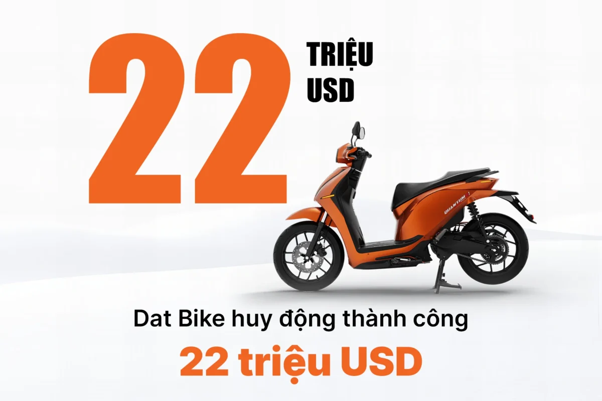
Dat Bike huy động thành công 22 triệu USD vòng gọi vốn Series B
Một trong những quan điểm được đưa ra khá nhiều trong các thảo luận về xe điện
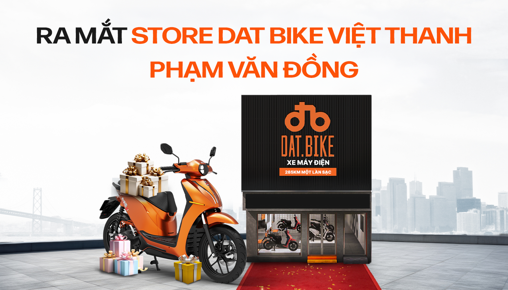
Khai trương Store Việt Thanh Phạm Văn Đồng – Cột mốc Store thứ 10 tại Hà Nội
Dat Bike khai trương Store Việt Thanh Phạm Văn Đồng, đánh dấu store thứ 10 tại Hà Nội.
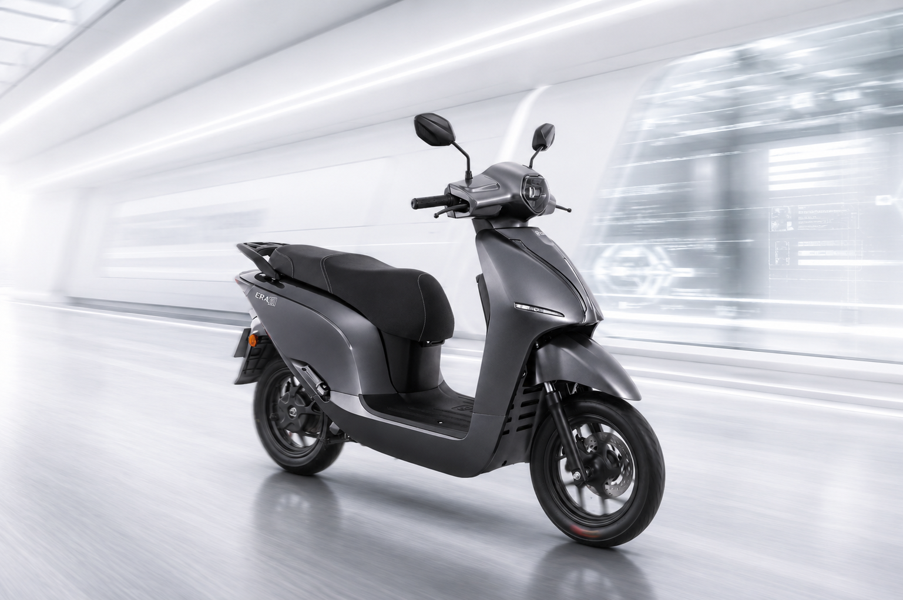
Ra mắt công nghệ dự báo hành trình (Dat Ride Predictor)
Dat Bike ra mắt công nghệ Dự báo hành trình (Dat Ride Predictor) trên xe Quantum
Cộng đồngDat Bikers
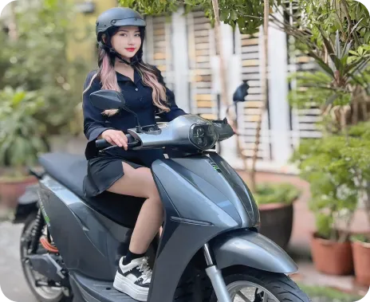
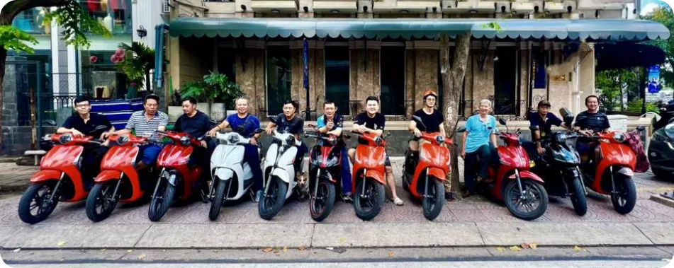
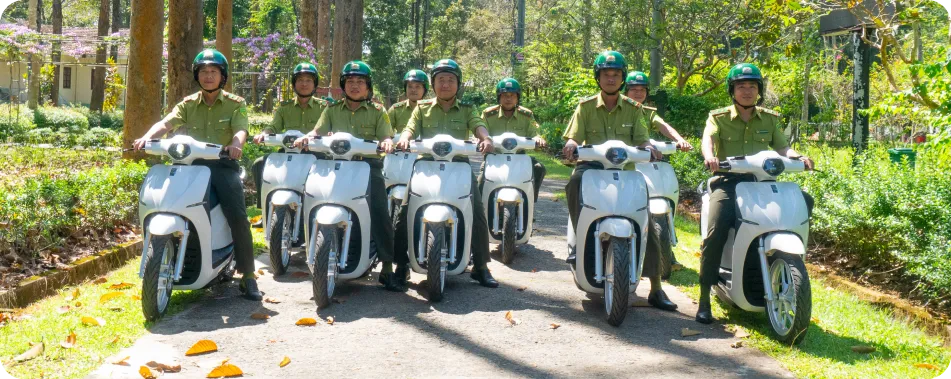
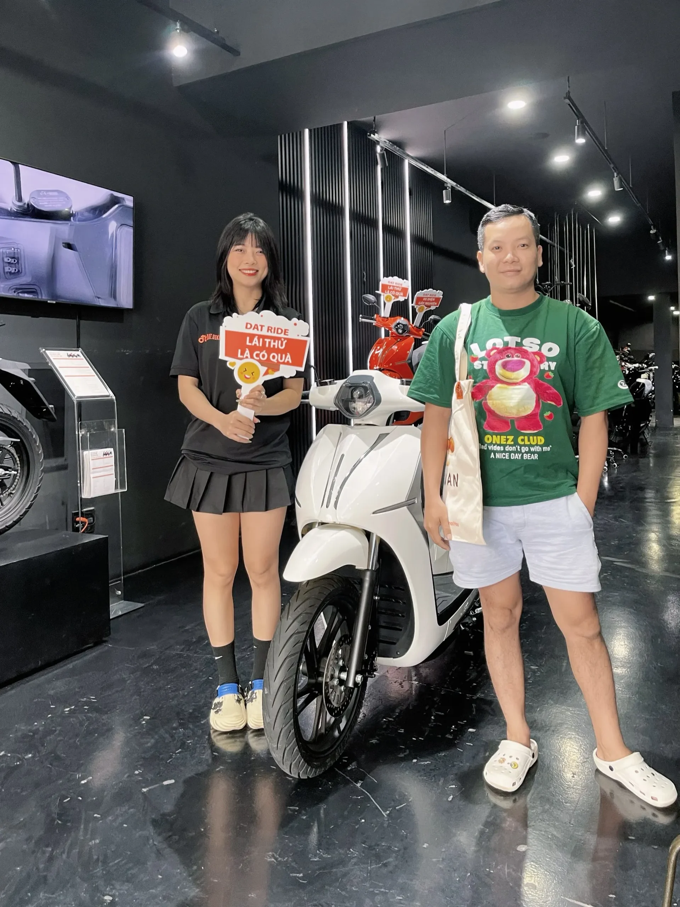
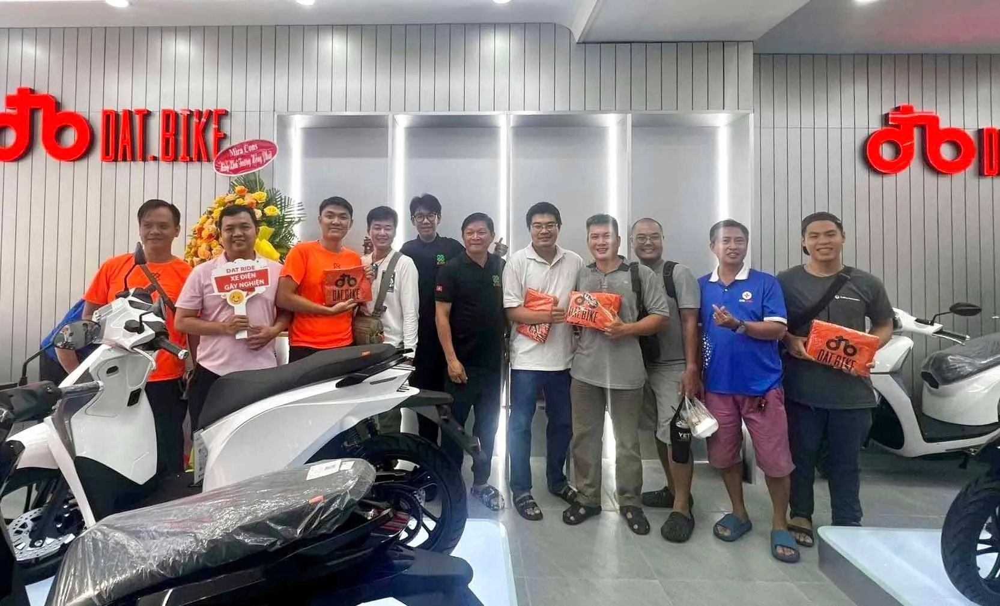
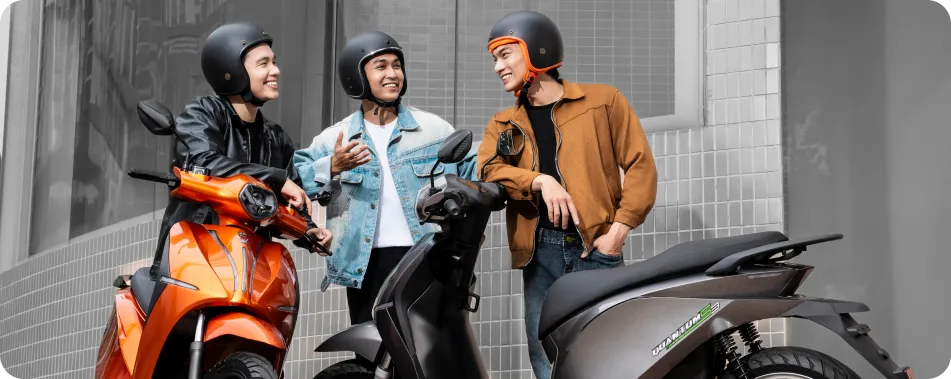
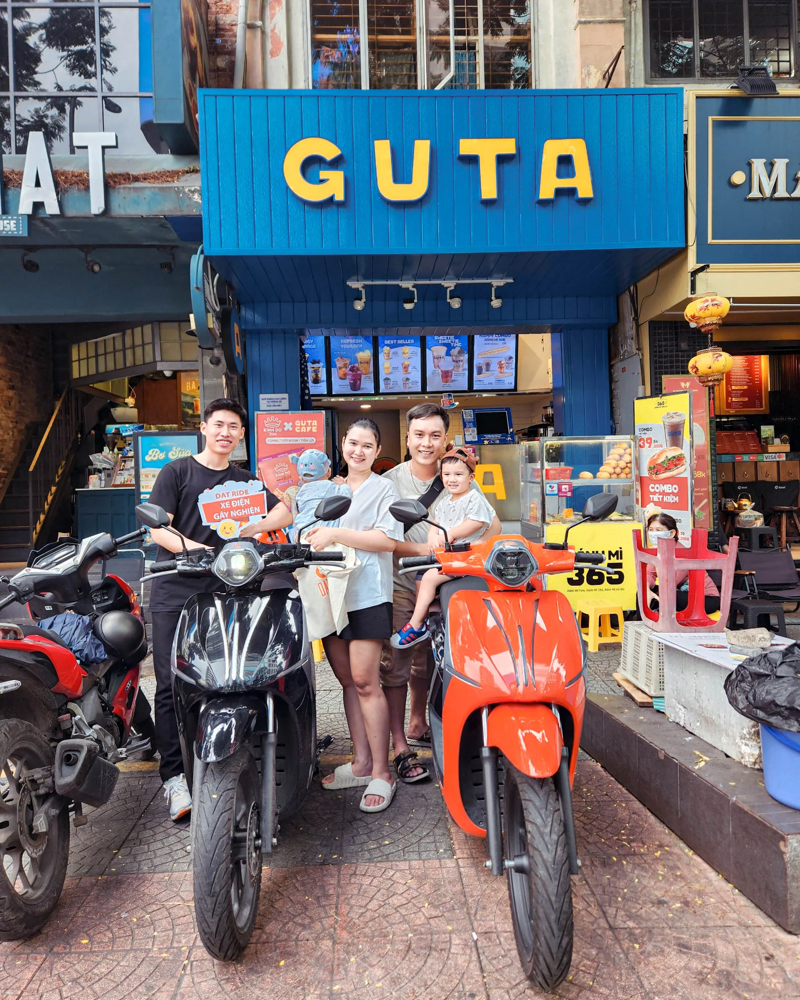